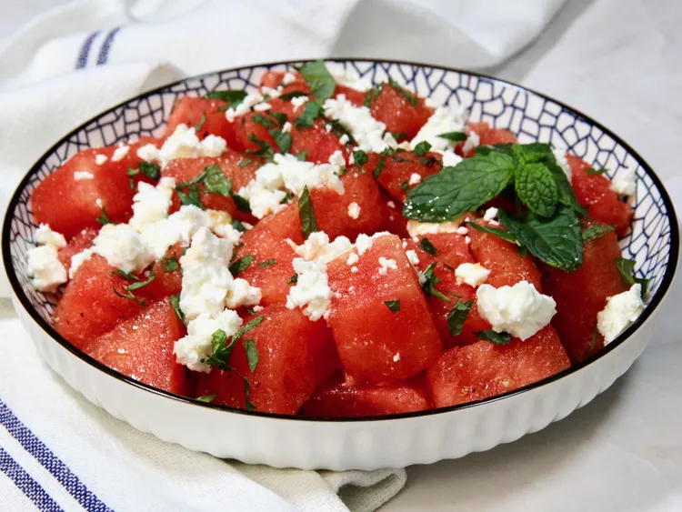

Summer Salad

This watermelon, feta, and mint salad shows up often at our house during the summer, especially for cookouts.
The quality of the olive oil and feta cheese is important, so go ahead and splurge a little.
It’s refreshing, loaded with sweet and salty flavors, and takes minutes to make.
Ingredients
- watermelon
- Olive oil
- Lemon juice
- Freshly grated lemon zest
- Kosher salt
- Black pepper
- Feta cheese
- Fresh mint leaves
How to Prepare the Salad
- Place the chilled watermelon cubes in a large bowl
- Whisk olive oil, lemon juice, lemon zest, kosher salt and black paper in a small bowl
- Just before serving, drizzle dressing over chilled watermelon, and toss gently. Sprinkle feta cheese and mint over the watermelon, but do not mix in. Serve immediately.
Note:
Sheep’s milk feta cheese is recommended because it’s so much creamier than cow’s milk feta. Freshly-squeezed lime juice and zest may be substituted for the lemon.
HOME